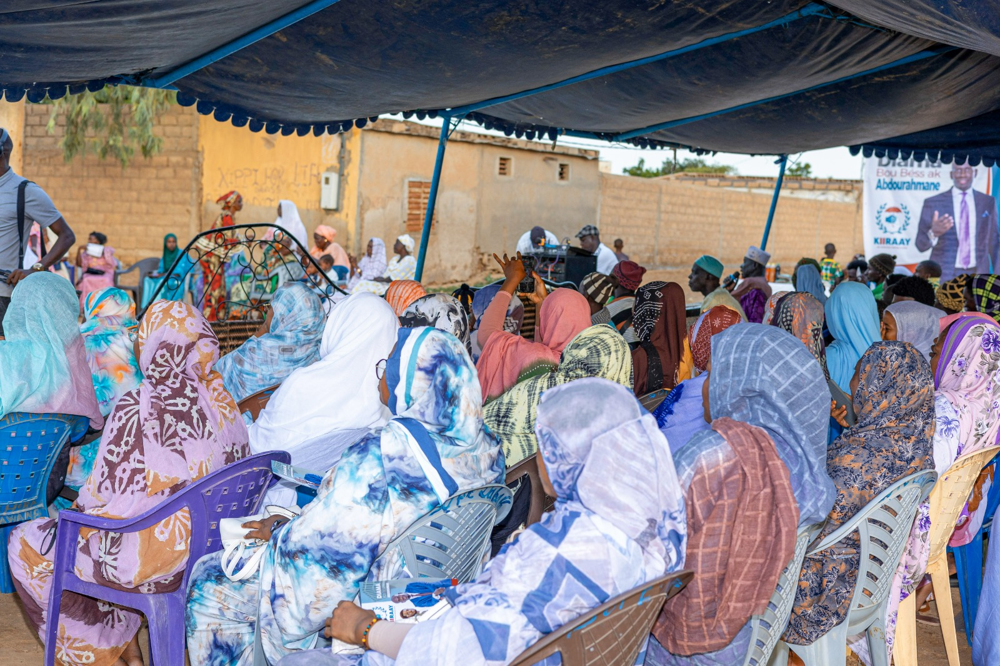
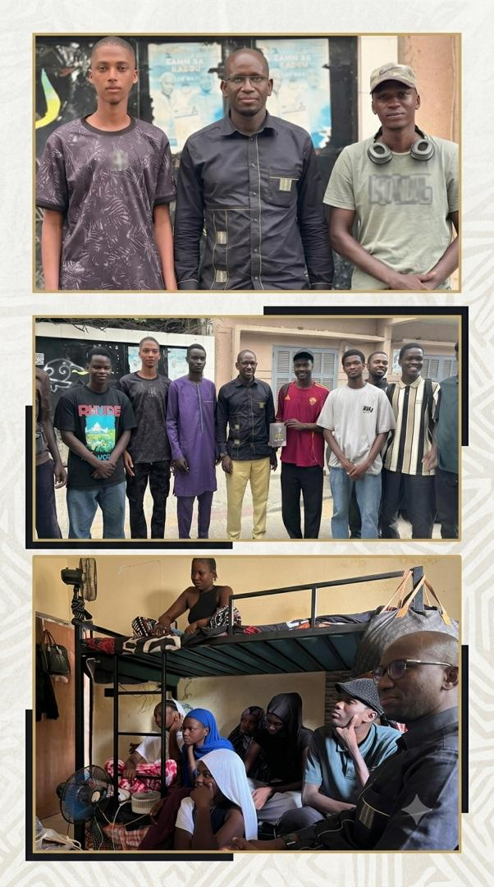

Actualités
Diama en mouvement.
Actualités
À la une

À la uneThiléne : une forte mobilisation autour de la candidature de M. Abdourahmane FALL
Retour sur le meeting de soutien organisé à Thiléne et les temps forts de cette rencontre.
Lire l’actualité →
RencontreRencontre entre la CEECOD et M. Abdourahmane FALL à Fass
Les élèves et étudiants de Diama ont échangé avec le candidat sur leurs préoccupations et leurs conditions d’études.
Lire l’actualité →▶Vidéo
VidéoEntretien avec Abdourahmane Fall, candidat à la mairie de Diama
Un entretien consacré à sa candidature et à sa feuille de route pour Diama.
Voir la vidéo →